User manual · Lite Flight Planner
Plan on a big screen. Fly from the phone.
The planner is Lite Flight in a web browser. Draw the mission on a computer, check it in 3D against the terrain, then send it to the phone with a QR code. Lite Flight opens it ready to fly, with the same lines, heights and photo points.
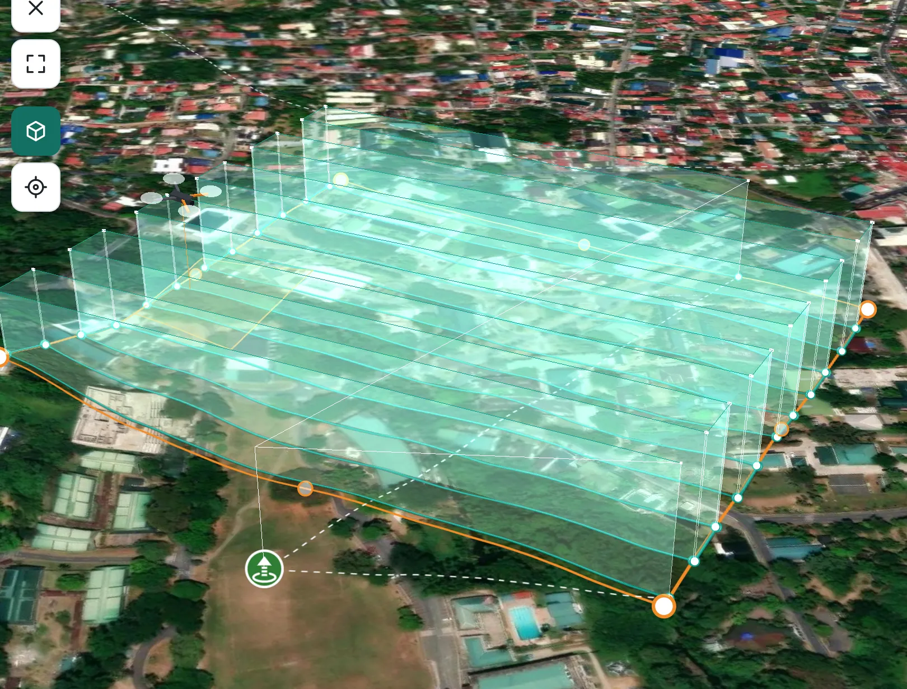
01 · Overview
How it works
The planner prepares the mission; Lite Flight on the phone takes it to the drone. Every mission goes through the same five steps.
- DrawOutline the area, trace the road or drop the orbit centre, and place the launch point.
- Set upPick the drone and the altitude, GSD, overlap and speed, as in Lite Flight.
- CheckRead the notes, clear any ground warning, and fly it once in the 3D simulation.
- SendSend to phone shows a QR code and a six-character code. Or download the KMZ.
- Open in Lite FlightScan the QR, or type the code, in Lite Flight's My missions, then fly as usual.
The planner itself is never limited. But a mission prepared here is a flight file, and Lite Flight only opens flight files while its license or trial is active. See Prepared missions and the license.
02 · Orientation
The screen
Three columns: your missions, the open mission's settings, and the map.
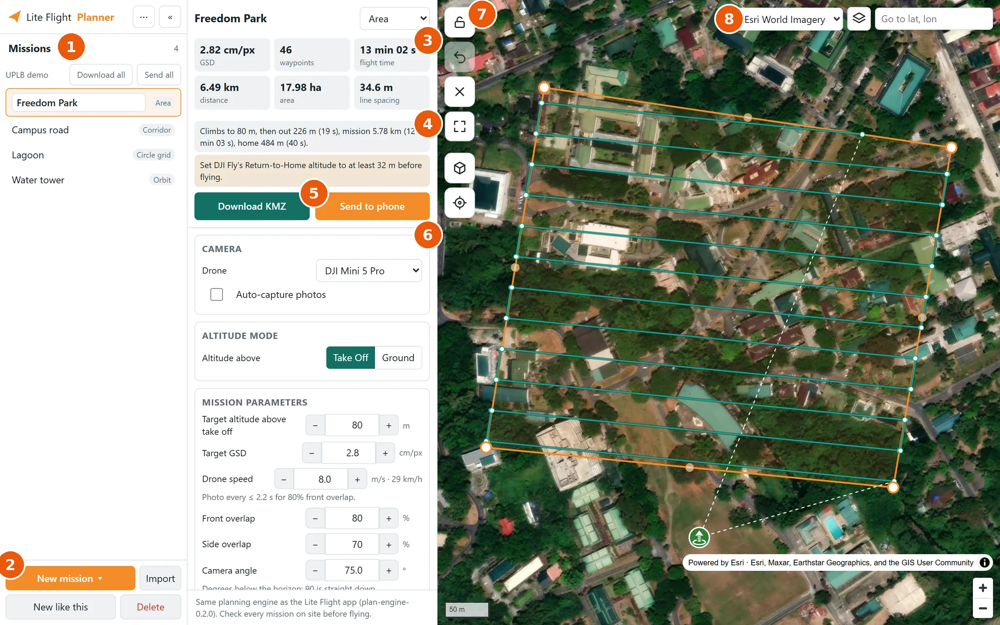
- Missions. Click one to open it; click the open one's name to rename it. Missions imported from one file are grouped as a project, with Download all and Send all.
- New mission, Import, New like this, Delete.New like this starts the same type of mission with the same settings.
- Summary. GSD, waypoints, flight time, distance, area and line spacing, recomputed as you edit.
- Notes. The climb to waypoint 1, the legs out and home, and the Return-to-Home altitude to set.
- Download KMZ and Send to phone.
- Settings for the mission, in cards. Mission settings goes through them.
- Map buttons: lock editing, undo, clear the outline, zoom to the mission, 3D view, my location.
- Basemap, your layers, go to lat, lon. See Maps and your own layers.
The « button folds the missions away for more map. On a phone the missions open as a drawer and the settings sit in a sheet you pull up, but a computer is far more comfortable for planning.
03 · On the map
Draw a mission
Pick the mission type from New mission, then click on the map. The hint at the top of the map says what each click does.
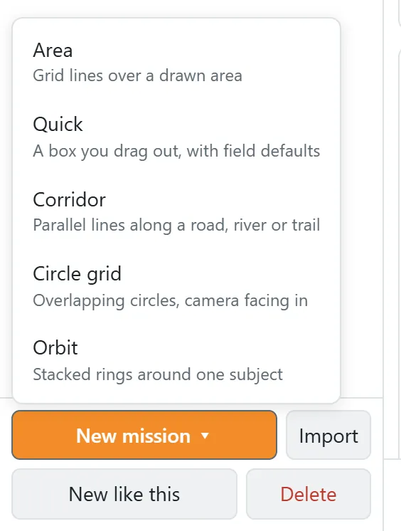
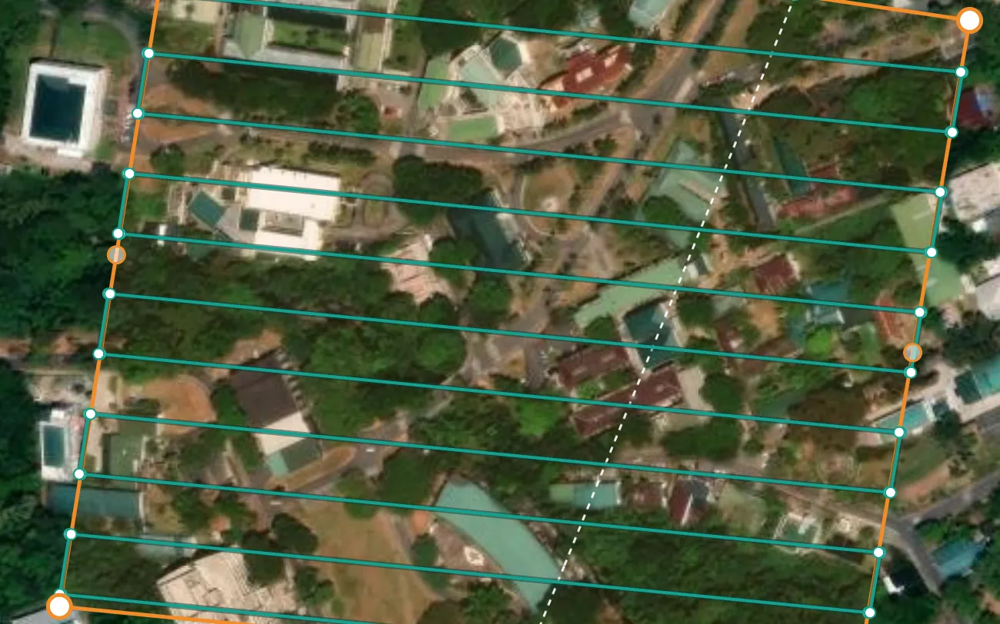
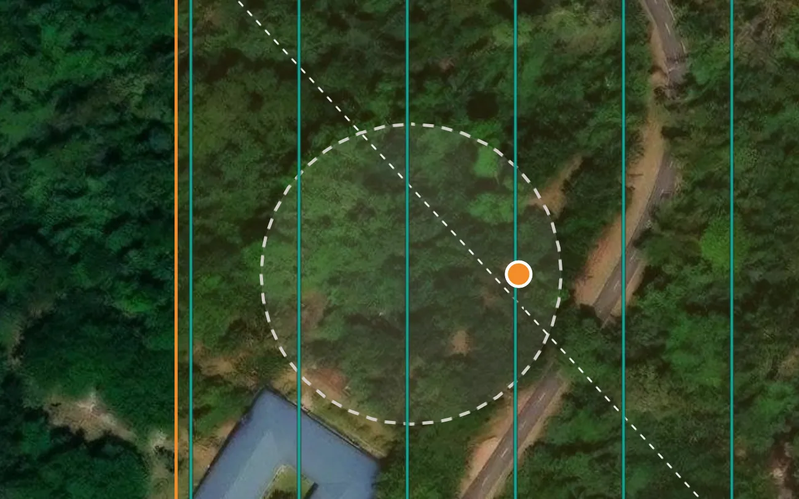
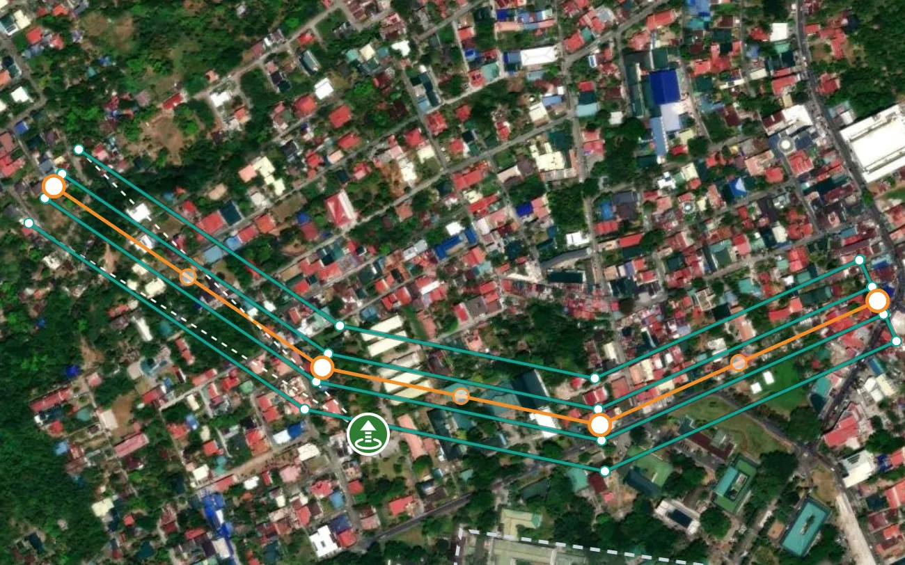
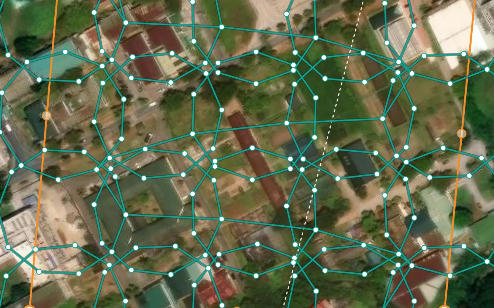
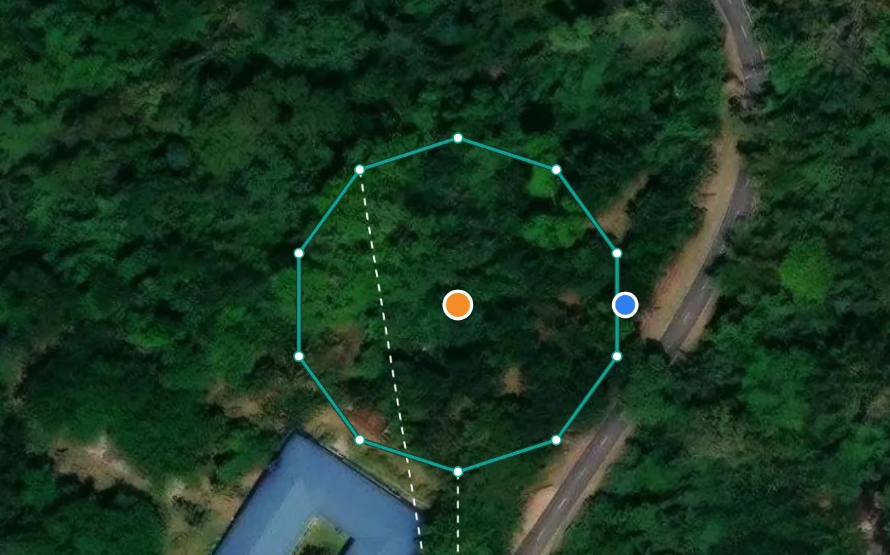
Edit the shape and the launch point
- Move a corner by dragging it. Drag a small midpoint to add a corner there.
- Delete a corner by right-clicking it, or click it and press Delete.
- Undo with the ↶ button or Ctrl+Z.
- Place the launch point where the drone takes off: the planner asks for it once the shape is done. Drag the green take-off icon to move it.
- Lock editing with the padlock when you only want to look around, so a stray drag can't move anything.
The heights, the climb before waypoint 1 and the ground check all start from the ground at the launch point. Put it where you will really stand. If you move on site, move it here too and send the mission again.
04 · The middle column
Mission settings
The same settings as Lite Flight's, in the same cards. Every change replans the mission at once.
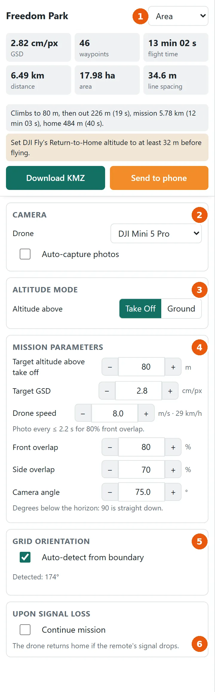
- Mission type. Turn an Area outline into a Circle grid, or back, without redrawing it.
- Camera. Pick your drone. Auto-capture photos adds a waypoint at every photo position, as in Lite Flight.
- Altitude mode. Take Off flies one height above the launch point. Ground follows the terrain, keeping the same height above the ground under every line.Terrain-follow threshold: how much the ground must change before a waypoint is added.
- Mission parameters. Altitude and GSD move together: change one and the other follows. Then speed, front and side overlap, and camera angle (90° is straight down).The line under the speed says how often the camera fires for that overlap.
- Grid orientation. Auto-detect picks the line direction from the outline; turn it off to set the grid angle yourself.
- Upon signal loss. Continue the mission, or return home, when the remote's signal drops.
Orbit and Circle grid add their own: the radius, the waypoints per circle, the number of rings and the height between them, and an automatic camera angle that keeps the subject in frame.
05 · Before you send
Safety checks
The planner checks the whole flight against the terrain, from take-off to landing, not only the mission lines.
The mission goes into the ground
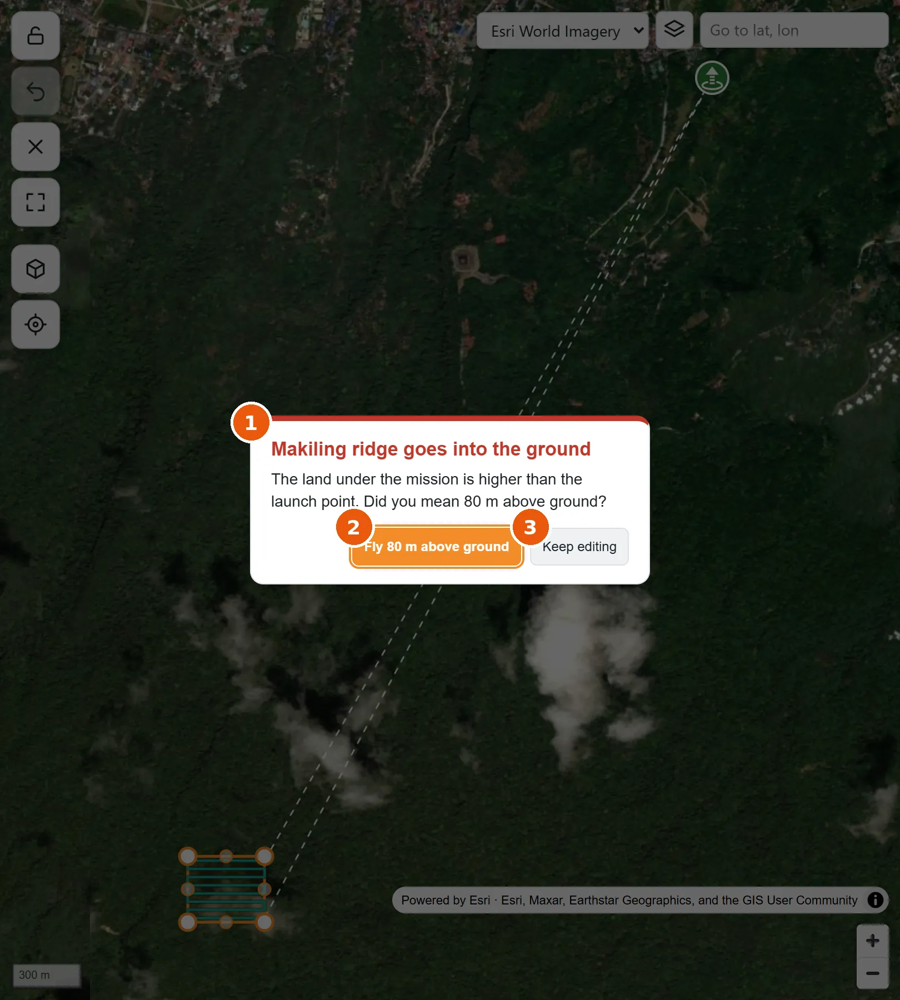
- The pop-up appears when part of the flight would be less than 5 m above the ground, named after the mission. Most often the mission is set above the take-off point, but the area is on higher ground.
- Fly N m above ground switches the mission to the Ground altitude mode at the same height, which is usually what was meant.
- Keep editing closes it so you can move the launch point or raise the altitude. Download and Send stay off until the flight is clear.It comes back after each change that is still unsafe, but never while you are dragging a point.
Between 5 and 20 m above the ground, the mission can be sent, but a short warning stays in the notes. Look at those stretches in the 3D view: trees and buildings aren't in the online terrain.
The climb to waypoint 1, and the way home
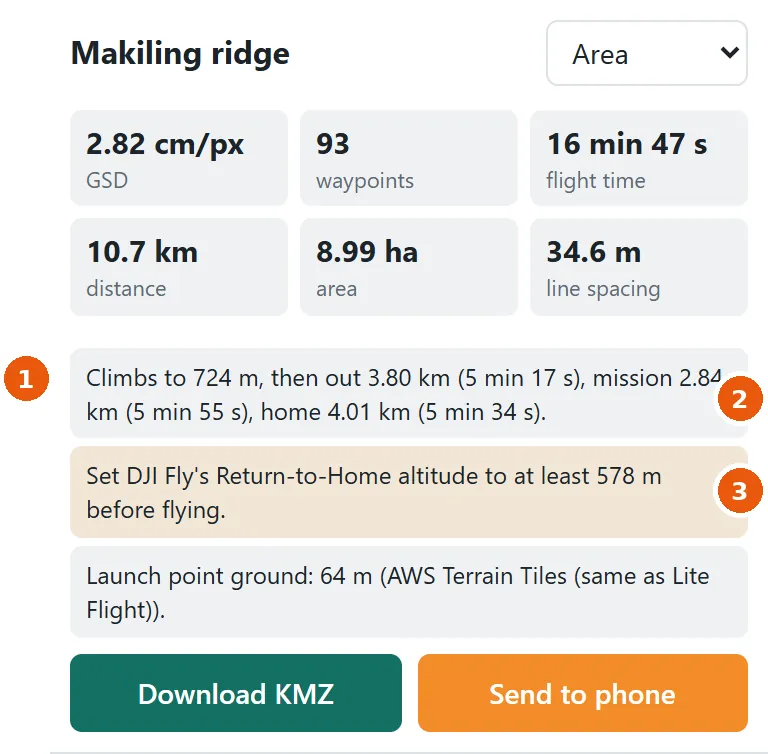
- Climbs to N m. The drone goes straight up over the launch point before it flies to waypoint 1: to the mission's highest altitude, and higher if the ground on the way is higher (it then says to clear a hill). It always stays at least 30 m above the ground on that leg.
- Out, mission, home. The distance and time of each part of the flight.
- Return-to-Home altitude. Set this in DJI Fly before you fly.
A KMZ can't set it. When the mission ends, or the signal is lost, the drone flies home at DJI Fly's RTH altitude, measured from the launch point. Below the height the note gives, the way home can meet a hillside. Set it on every flight, in DJI Fly's safety settings, before you take off.
06 · From other tools
Import KML or KMZ
Bring in outlines from Google Earth, QGIS or a client's file. Each shape becomes its own mission.
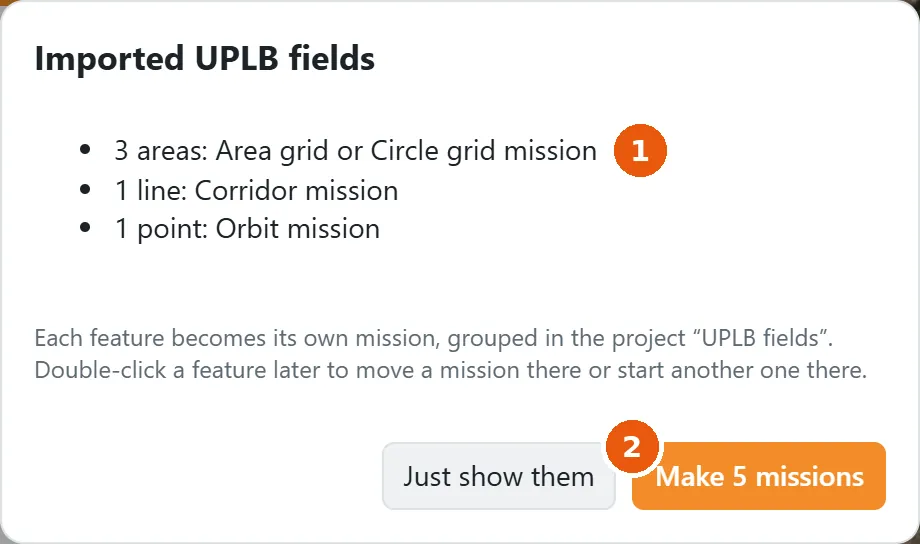
- What was found, and which mission type each kind of shape fits: areas for Area or Circle grid, lines for Corridor, points for Orbit.
- Make the missions, one per shape, grouped as a project named after the file. Or Just show them on the map.
- Press Import, or drop the file on the page. KML and KMZ up to 25 MB.
- Shapes with many corners are simplified to a shape that still contains all of the original, so nothing is left out. Holes are ignored.
- The file's shapes stay on the map in grey. Double-click one to move the open mission onto it, or to start a new mission there with the same settings.
- A KMZ made by the planner or by Lite Flight opens again as an editable mission.
Lite Flight on the phone can import the same KML and KMZ files: see Import a KML or KMZ.
07 · Base maps
Maps and your own layers
Plan over satellite imagery, a street map, your own tile source, or your own orthophoto from an earlier flight.
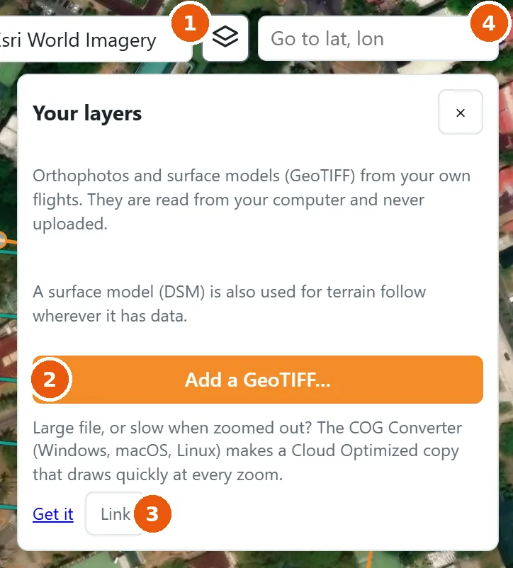
- Basemap. Esri World Imagery or OpenStreetMap, or Add a tile source… with any XYZ address, such as
https://…/{z}/{x}/{y}.png. Your sources are kept in this browser. - Your layers. Add a GeoTIFF from your own flight: an orthophoto shows on the map; a surface model (DSM) shows shaded and is used for terrain follow where it has data.The files are read from your computer and never uploaded.
- COG Converter. A large GeoTIFF draws slowly until it is made Cloud Optimized. The free converter (Windows, macOS, Linux) makes the copy; press Link and the planner swaps it in by itself.
- Go to lat, lon. Type coordinates like
14.165, 121.241.
A drone surface model is rarely on the same height datum as the online terrain. The planner shifts it to match the online terrain on open ground, or you can type a fixed shift. Turn off Use for terrain follow to only look at it.
08 · Rehearse
3D view and flight simulation
The cube button tilts the map onto the terrain and draws the whole flight at its real height. Right-drag, or Ctrl-drag, to tilt and turn.
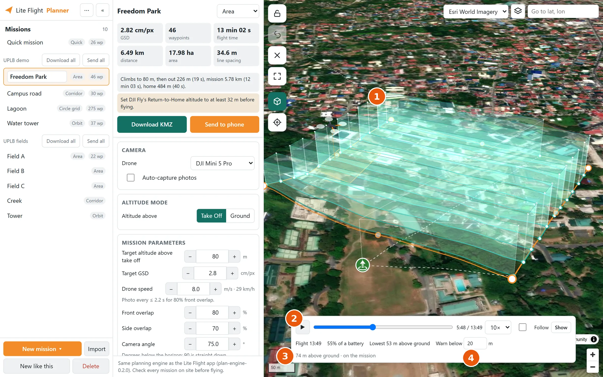
- The flight path. Orange where the drone climbs, teal where it is level, blue where it descends, and red wherever it passes closer to the ground than the warning height.
- Play, scrub, speed. 1× to 60×. Follow keeps the drone in the middle of the map. The drone shows its camera footprint as it flies.
- Flight, battery, lowest point. Time from take-off to landing, the share of a battery it uses (planned on 70 % of the drone's rated time), and the closest it comes to the ground. Click low stretch to jump to it.
- Warn below. The clearance that turns the path red, 20 m by default. With your own surface model loaded, it is the clearance over the treetops and roofs.
09 · To the phone
Send to phone
The fastest way to the field: a QR code that Lite Flight scans.
- QR code. In Lite Flight, scan it with the QR button: the mission loads directly.
- Share code. Six characters, for a controller or phone that can't scan. In Lite Flight, tap the keyboard icon next to My missions and type it: handy on a DJI RC with no camera. Or open the link's address in any phone's browser and type it there.
- Link. Downloads the KMZ in any browser, to open later with the open-file icon next to My missions in Lite Flight (Load mission plan).
- Offline maps. Lite Flight offers to download the terrain and map imagery for the mission's area, so the map works with no signal on site.
- A week, then gone. Shared missions are kept 7 days and then deleted. Anyone with the code can download them until then, so share codes only with your team.
- Same mission, same code. Sending the same, unchanged missions again gives the same code and keeps it another week.
- Several at once. Send all on a project sends every mission in it under one code.
- Offline maps are fetched by the phone. Only the area is sent: the phone downloads the terrain, and the imagery of whatever basemap is active in Lite Flight (your custom XYZ source, if you set one). It skips what it already has. See Offline imagery.
Download KMZ saves the mission as a Lite Flight KMZ. Copy it to the phone and open it with the open-file icon next to My missions in Lite Flight (Load mission plan). It is the same file Lite Flight exports, with the outline and settings inside, so you can also reopen it in the planner later.
10 · Keep it
Save your work
Missions are kept in this browser, so they are still there after a reload. A workspace file keeps them anywhere.
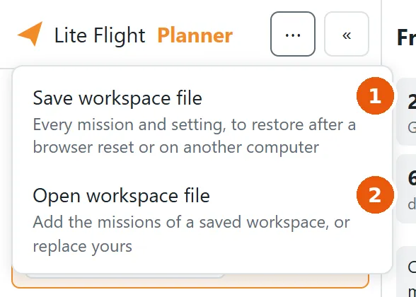
- Save workspace file (the ⋯ menu) writes every mission, the imported shapes and your settings to one file.Do it before clearing the browser's data, and to move your missions to another computer.
- Open workspace file, or drop it on the page, adds its missions to yours or replaces them.Your GeoTIFF layers come back listed; open each file again (one click in Chrome and Edge).
- No account and no sign-in. Your missions are not sent anywhere until you press Send to phone.
- Your own GeoTIFFs are read on your computer and never uploaded.
- The site counts visits, new missions, imports and downloads, without names, shapes or anything you type, to see how it is used.
11 · Troubleshooting
Questions
Lite Flight says the mission can't be opened.
Missions made in the planner are flight files, which Lite Flight opens only while its license or trial is active. Renew it, then scan again. See Prepared missions and the license.
Download KMZ and Send to phone are greyed out.
Part of the flight would be less than 5 m above the ground, or the launch point is missing. Read the pop-up or the notes; Safety checks explains the fixes.
The code has expired.
Shares are kept 7 days. Open the planner on the same computer and send the mission again: your missions are still in the browser.
My missions are gone.
They live in the browser's storage, so clearing site data, a private window or another browser starts empty. Open your last workspace file, or a KMZ you downloaded or sent.
Does the planner fly differently from Lite Flight?
No. Both use the same planning engine; its version is shown at the foot of the settings column.
Can I fly the KMZ with DJI Fly directly?
Open it in Lite Flight first, then send it to DJI Fly from there as usual: that is where the mission is put into a DJI Fly slot. See the Lite Flight manual.